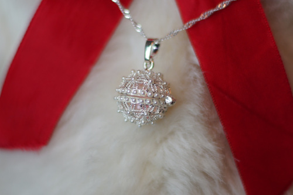
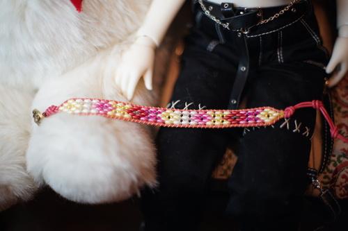
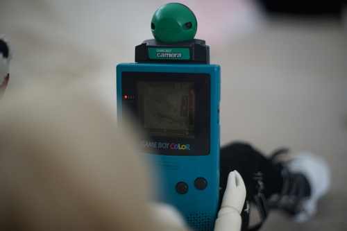

i wasnt sure exactly what to expect after my last craft fair, but i went to an honest to god craft fair!! some of the sellers were dumb cr*p like "item too big for a jar, inside the jar!" and "absolut vodka half gallon bottle with the top cut off and now its a vase". others had stuff like lotions and candles and some jewelry. i didnt see anything like mary kay, scentsy, or any other big MLMs!
i bought just a few things! the first was a pearl necklace. the seller might have been part of an MLM since she was talking about doing parties and acting so excited every time she opened a clam for a customer. I saw the little metal pearl holder and thought it was so delicate and cute that i wanted to get in on her deal. she was selling 1 (freshwater) pearl, one pearl locket/setting, and one sterling silver chain for $10 for the set. i have no idea if it was any sort of a good deal but i had fun "designing" my own set. i went with a very light pink pearl inside of a little globe covered in white "pearls". hopefully the little fake pearls stay put for a while. i chose not to have her open a clam for me because im ridiculusly picky about roundness and color. i kinda would have liked to open one myself though...
the second item i bought was a beaded bracelet for $25. the little old man was talking about how his wife has been making these for 10 years and they live in the next town over. it was really sweet and i liked the spring colors of it! i came back after i finished my first loop and i got to meet her as well.
next item was a $1 cakepop for ryan~ and the last is a "illegal pastiche bible" ryan got for free from a jewelry dealer.
i shopped around for gnomes for my mom. i found a lot of them but none of them really met my standards so i left them all. I'll just have to make her one myself i guess. I have no idea why theres a gnome trend right now. i dont get it.
i asked anyone who had lotions or lip balms if they had anything violet scented and not a single one did! guess ill have to go sniff my yard instead. one of the women descended on me telling me how there were so many other good things that werent violet in her products. like dude im gonna be the toughest fr*ckin customer if you do not have violet scent. dont bother trying
